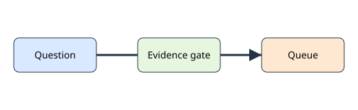

Business and process questions follow the front-support path.
A technical network timeout is an infrastructure failure. The assistant must abstain from a business answer and route the case to the synthetic IT service desk.
